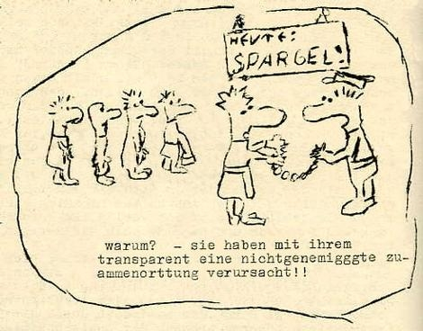

Politisches Strafrecht der DDR und die „Gesinnungsparagraphen“
Das politische Strafrecht der DDR basierte auf einer ganzen Reihe von „Gesinnungsparagraphen“ - im Volksmund auch als „Gummiparagraphen“ bezeichnet. Sie kamen bei jeglichen Formen nichtöffentlicher oder öffentlicher Meinungsäußerung, in denen von den Staatsdoktrin abgewichen wurde, zur Anwendung.
Dies betraf besonders folgende Paragraphen des Strafgesetzbuchs der DDR:
Dies betraf besonders folgende Paragraphen des Strafgesetzbuchs der DDR:

(aus: Kopfsprung)
Aus: Jürgen Fuchs - Vernehmungsprotokolle*
25.11.
(...)
Tür öffnet sich, II betritt den Raum, stellt sich ans Fenster.
II: Ich weiß, woher der Wind weht: Sie wollen den Helden spielen. Wozu denn, sieht ja doch keiner. Und wir haben Zeit, viel Zeit. Außerdem passt das gar nicht zu ihnen. Sie sind ein anpassungsfähiger Mensch, wir kennen Sie ganz genau. Außerdem sind Sie sensibel. Das ist zwar schön und selten, aber hier ist das Gift. Sie gehen hops, leider. Blättert in einem Ordner: Was Nettes von Ihnen, ein Gedicht für Ihre Frau: "Wenn su mich suchst / und gar nicht findest / verloren bin ich lange nicht / kann sein, ich sitz / vor hohen Herren / und kleinen Häschern vor Gericht. Schnalzt mit der Zunge: Ein Wort, ein Satz / Vielleicht auch ein Gedanke / wenn´s hochkommt ein Gedicht / ach so, du weißt schon / welches Hinterzimmer / verloren bin ich lange nicht." Sind wir nun die "hohen Herren"? Wir sind die "kleinen Häscher", was? Und "Vorverhöre" haben Sie geschrieben, so hieß doch diese Prosaserie, was heißt Prosa, Hetze, Schreiberei. Na ja, und jetzt kommen die Verhöre. Aber ob Sie die noch schreiben Können? Ihre Uhr habe wir Ihnen abgenommen, Papier und Bleistift brauchen Sie jetzt auch nicht, Sie können höchstens mit dem Finger auf den Tisch malen ...
I: Das macht er schon ...
(...)
(* Jürgen Fuchs: Verneh-mungsprotokolle Nov.´76 bis Sept.´77;
Rowohlt, Reinbeck 1978)
(...)
Tür öffnet sich, II betritt den Raum, stellt sich ans Fenster.
II: Ich weiß, woher der Wind weht: Sie wollen den Helden spielen. Wozu denn, sieht ja doch keiner. Und wir haben Zeit, viel Zeit. Außerdem passt das gar nicht zu ihnen. Sie sind ein anpassungsfähiger Mensch, wir kennen Sie ganz genau. Außerdem sind Sie sensibel. Das ist zwar schön und selten, aber hier ist das Gift. Sie gehen hops, leider. Blättert in einem Ordner: Was Nettes von Ihnen, ein Gedicht für Ihre Frau: "Wenn su mich suchst / und gar nicht findest / verloren bin ich lange nicht / kann sein, ich sitz / vor hohen Herren / und kleinen Häschern vor Gericht. Schnalzt mit der Zunge: Ein Wort, ein Satz / Vielleicht auch ein Gedanke / wenn´s hochkommt ein Gedicht / ach so, du weißt schon / welches Hinterzimmer / verloren bin ich lange nicht." Sind wir nun die "hohen Herren"? Wir sind die "kleinen Häscher", was? Und "Vorverhöre" haben Sie geschrieben, so hieß doch diese Prosaserie, was heißt Prosa, Hetze, Schreiberei. Na ja, und jetzt kommen die Verhöre. Aber ob Sie die noch schreiben Können? Ihre Uhr habe wir Ihnen abgenommen, Papier und Bleistift brauchen Sie jetzt auch nicht, Sie können höchstens mit dem Finger auf den Tisch malen ...
I: Das macht er schon ...
(...)
(* Jürgen Fuchs: Verneh-mungsprotokolle Nov.´76 bis Sept.´77;
Rowohlt, Reinbeck 1978)